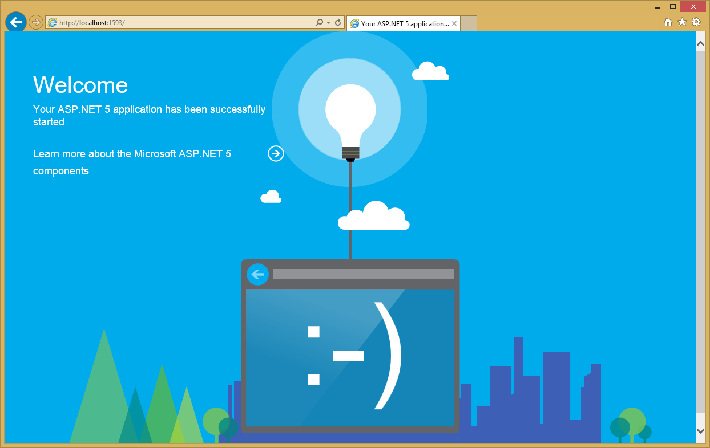

Diagnostics¶
ASP.NET Core includes a number of new features that can assist with diagnosing problems.
The developer error page¶
You can view the details of unhandled exceptions by specifying a developer error page. This topic is described in Error Handling.
The welcome page¶
Another extension method you may find useful, especially when you’re first spinning up a new ASP.NET Core application, is the UseWelcomePage() method. Add it to Configure() like so:
app.UseWelcomePage();
Once included, this will handle all requests (by default) with a cool hello world page that uses embedded images and fonts to display a rich view, as shown here:
You can optionally configure the welcome page to only respond to certain paths. The code shown below will configure the page to only be displayed for the /welcome path (other paths will be ignored, and will fall through to other handlers):
app.UseWelcomePage("/welcome");
Glimpse¶
Glimpse is a plug-in that provides a tremendous amount of insight into your ASP.NET Core application, directly from the browser. Glimpse can be added to your in app in just a few simple steps:
- Add a dependency on the “Glimpse” package in
project.json - Call
services.AddGlimpseinConfigureServices - Call
app.UseGlimpseinConfigure
Run your app on localhost, and you should see Glimpse information bar at the bottom of the browser window. View a walkthrough of setting up Glimpse for ASP.NET Core.
Logging¶
ASP.NET Core includes a great deal of built-in logging that can assist with diagnosing many app issues. In many cases, just enabling logging is sufficient to provide the diagnostic information developers need to identify problems with their app. Logging is enabled and configured in your app’s Startup class.
Learn more about configuring logging in your ASP.NET Core app.
Note
Application Insights can provide production diagnostic information in a cloud-based, searchable format.